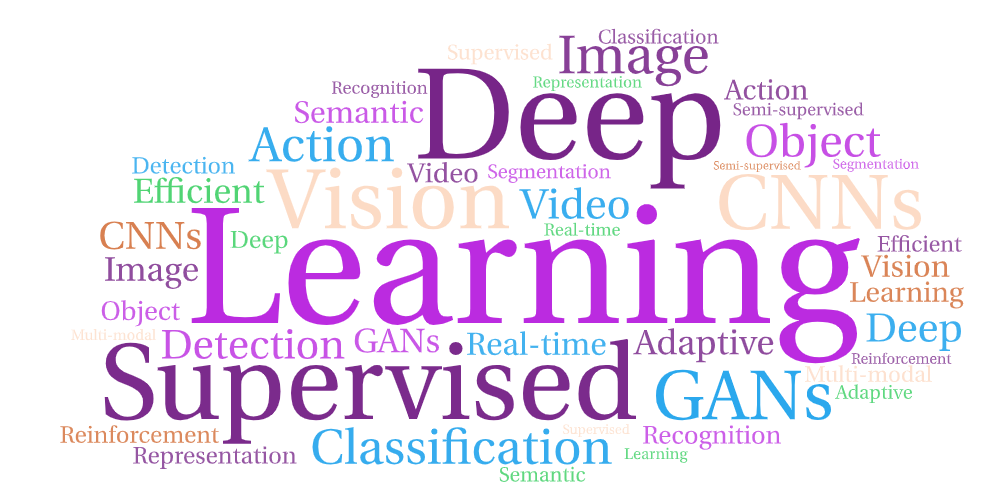

Chen Chen
Ph.D., Associate Professor
IEEE Senior Member
ACM Member

Prospective Students
I am always looking for highly motivated students for research. Please read this Ph.D. opening documentPHD-application.pdffor detailed research topics and requirements. How to apply: please visit the "Join Us" page for more information.
Research Interests
Computer Vision
Generative AI
Image and Video Processing
News
Latest updates and achievements
07/2025
1 paper accepted by ACM Multimedia 2025.
06/2025
4 papers accepted by ICCV 2025.
05/2025
2 papers accepted by ACL 2025 (Main Track).
04/2025
I'm honored to receive the Excellence in Faculty Academic Advising Award.
02/2025
3 papers accepted by CVPR 2025.
01/2025
2 papers accepted by ICLR 2025.
12/2024
We will organize the 4th Workshop on Federated Learning for Computer Vision (FedVision-2025), in conjunction with CVPR 2025.[Link]
12/2024
We will organize a tutorial on "Cross-View Geo-Localization: Current Challenges and Future Frontiers with GenAI", in conjunction with WACV 2025.[Link]
Awards and Honors
Recognition and achievements in academic career
2025
University of Central Florida
2024
Academy of Science, Engineering and Medicine of Florida (ASEMFL)
2022-2024
World's top 2% scientists
Stanford University/Elsevier
2023
CVPR 2023 Long-form Video Understanding and Generation Workshop
2023
MICCAI Conference
2022
CVPR Best Paper Finalists
🏆 Best Paper Nominee
IEEE/CVF Conference
2019
UNC-Charlotte Faculty Research Award
University of North Carolina at Charlotte
2019
ACM Multimedia Travel Grant
ACM Multimedia Conference
2016
David Daniel Fellowship Award (Best Doctoral Dissertation Award)
University of Texas at Dallas
2015
Graduate Research Travel Award
University of Texas at Dallas